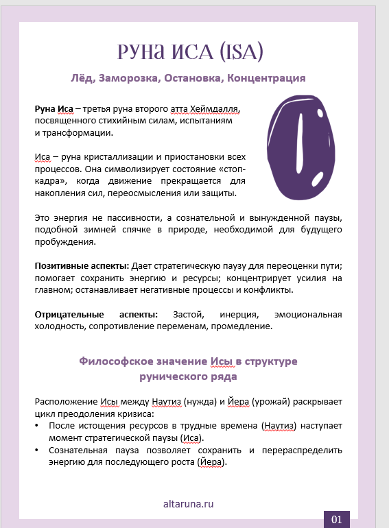

Гайд по всем рунам Старшего Футарка: значение каждой руны, её светлые и теневые стороны, место в руническом ряду. Скачайте и читайте с телефона или распечатайте.

Каждой руне посвящена отдельная страница – можно читать по порядку или сразу открыть нужную.
Образ руны и её смысл в двух-трёх словах – для быстрого запоминания.
Что руна даёт, в каких ситуациях поддерживает и на что направляет.
Где руна может проявиться как застой, сопротивление или перегиб.
Как руна связана с соседями и какой этап пути она описывает.
Три атта Старшего Футарка – от Феху до Оталы.
Следующий шаг после знакомства с рунами – как соединять их между собой, какие камни их усиливают и как использовать это в жизни.
Как руны звучат в паре и в тройке, какие связки дополняют друг друга, а какие спорят.
Камни-союзники для каждой руны и с чем соединять их не стоит.
Украшения, обереги, ежедневная практика – как выбрать руну и камень под свою задачу.
Все 24 руны
Сочетания и применение